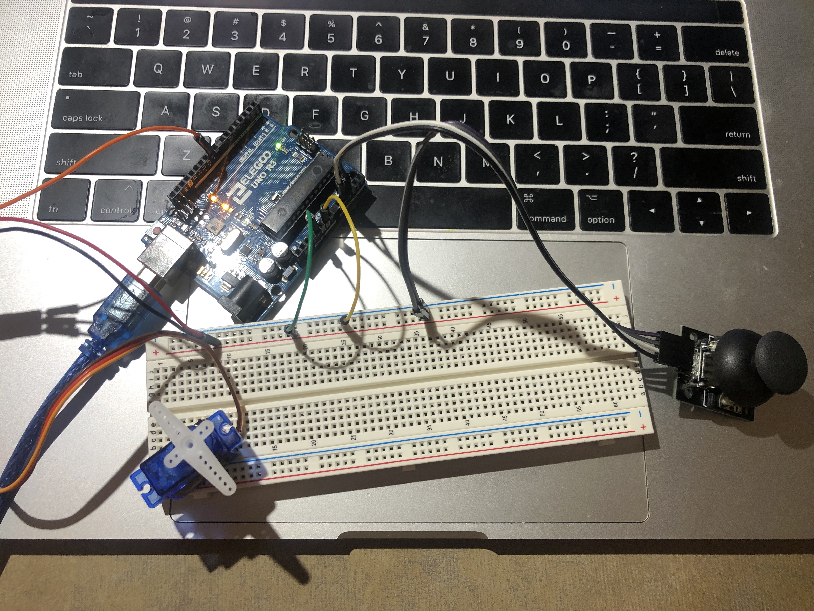

Circuits

Here is all the documentation for assignment 6!
The Joystick controls the little ball on the screen and the arrow keys controls the servo motor's direction. The value read from
joystick
is between 0 to 1023 in both x and y directions. The value to set the servo motor is between 0 to 180, representing different
directions.
#include <Servo.h>
Servo myServo; // create a servo object
void setup() {
Serial.begin(9600);
myServo.attach(9); // attaches the servo on pin 9 to the servo object
Serial.setTimeout(10); // set the timeout for parseInt
}
void loop() {
// read numbers from analog pins 1&2
int s1 = analogRead(1);
int s2 = analogRead(2);
// print the numbers out to serial
Serial.print("[");
Serial.print(s1);
Serial.print(",");
Serial.print(s2);
Serial.println("]");
if (Serial.available() > 0) { // if there's serial data
int inByte = Serial.read(); // read it
Serial.write(inByte); // send it back out as raw binary data
myServo.write(inByte); //some angle between 0 and 180
}
}